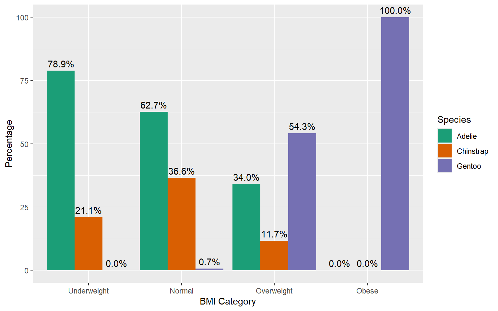
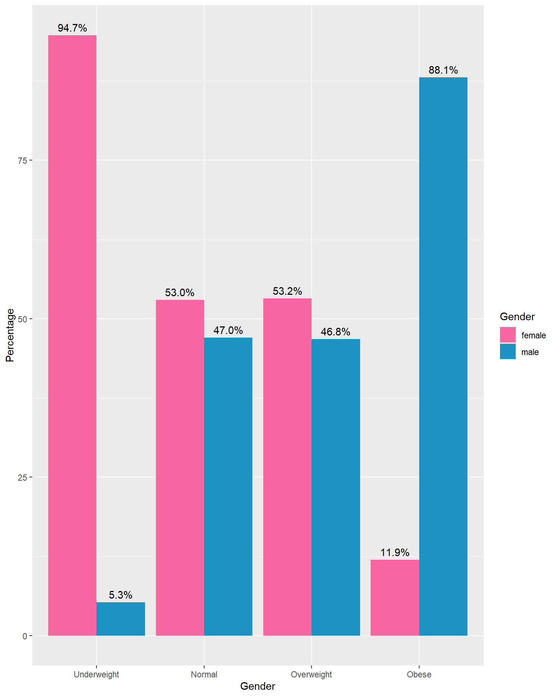

# A tibble: 333 × 9
species island bill_length_mm bill_depth_mm flipper_length_mm body_mass_g
<fct> <fct> <dbl> <dbl> <int> <int>
1 Adelie Torgersen 39.1 18.7 181 3750
2 Adelie Torgersen 39.5 17.4 186 3800
3 Adelie Torgersen 40.3 18 195 3250
4 Adelie Torgersen 36.7 19.3 193 3450
5 Adelie Torgersen 39.3 20.6 190 3650
6 Adelie Torgersen 38.9 17.8 181 3625
7 Adelie Torgersen 39.2 19.6 195 4675
8 Adelie Torgersen 41.1 17.6 182 3200
9 Adelie Torgersen 38.6 21.2 191 3800
10 Adelie Torgersen 34.6 21.1 198 4400
# ℹ 323 more rows
# ℹ 3 more variables: gender <fct>, year <int>, BMI_category <chr>5 Descriptive Statistics
5.1 Dataset Use for Illustrations
5.2 Qualitative data: Univariate Analysis
Chart types we can use: Pie chart, Bar chart
Tables: Tables with counts and percentages
Extract qualitative variables
# A tibble: 333 × 4
species island gender BMI_category
<fct> <fct> <fct> <chr>
1 Adelie Torgersen male Normal
2 Adelie Torgersen female Normal
3 Adelie Torgersen female Underweight
4 Adelie Torgersen female Normal
5 Adelie Torgersen male Normal
6 Adelie Torgersen female Normal
7 Adelie Torgersen male Overweight
8 Adelie Torgersen female Underweight
9 Adelie Torgersen male Normal
10 Adelie Torgersen male Overweight
# ℹ 323 more rowsNominal Scale Data
Tabular representations
Frequency tables/ Contingency Tables
| Species | Count | Percentage (%) |
|---|---|---|
| Adelie | 146 | 43.84 |
| Chinstrap | 68 | 20.42 |
| Gentoo | 119 | 35.74 |
| Total | 333 | 100.00 |
Graphical Representations
Simple Bar Charts
Pie Charts
Vertical Bar Chart
Counts Bar Chart
Percentage Bar Chart
Horizontal Bar Chart
Counts Bar Chart
Percentage Bar Chart
Sort bars for easy comparison

Pie chart

Which is the best?
Pie charts are easier to compare for relative proportions.
Pie charts are best for a small number of categories.
Bar charts are better for comparing precise values.
Bar charts can handle more categories without becoming cluttered.
Note: Our visual system is typically better at comparing lengths or heights than angles. This inherent characteristic of human perception makes bar charts more effective than pie charts for comparing values or proportions.
Your turn
What other types of charts are suitable for visualizing nominal scale data?
Ordinal Scale Data
Tabular Representation: One-wau tables
| BMI Category | Count | Cumulative Count | Percentage | Cumulative Percentage |
|---|---|---|---|---|
| Underweight | 38 | 38 | 11.41 | 11.41 |
| Normal | 134 | 172 | 40.24 | 51.65 |
| Overweight | 94 | 266 | 28.23 | 79.88 |
| Obese | 67 | 333 | 20.12 | 100.00 |
Graphical representation
Question: In this case, is it necessary to sort the bars in our data visualization for better clarity and interpretation?
5.3 Qualitative data: Bivariate Analysis
Tabular Representation: Two-way tables
| species | Underweight | Normal | Overweight | Obese | Total |
|---|---|---|---|---|---|
| Adelie | 30 | 84 | 32 | 0 | 146 |
| Chinstrap | 8 | 49 | 11 | 0 | 68 |
| Gentoo | 0 | 1 | 51 | 67 | 119 |
| Total | 38 | 134 | 94 | 67 | 333 |
Let’s compute
- Row percentage: percent that each cell represents of the row total
- Column percentage: percent that each cell represents of the column total
- Overall percentage (total percentage): percent that each cell represents of the grand total
| species | Underweight | Normal | Overweight | Obese | Total |
|---|---|---|---|---|---|
| Adelie | 30 | 84 | 32 | 0 | 146 |
| Chinstrap | 8 | 49 | 11 | 0 | 68 |
| Gentoo | 0 | 1 | 51 | 67 | 119 |
| Total | 38 | 134 | 94 | 67 | 333 |
| species | Underweight | Normal | Overweight | Obese | Total |
|---|---|---|---|---|---|
| Adelie | 20.5% | 57.5% | 21.9% | 0.0% | 100.0% |
| Chinstrap | 11.8% | 72.1% | 16.2% | 0.0% | 100.0% |
| Gentoo | 0.0% | 0.8% | 42.9% | 56.3% | 100.0% |
| Total | 11.4% | 40.2% | 28.2% | 20.1% | 100.0% |
| species | Underweight | Normal | Overweight | Obese | Total |
|---|---|---|---|---|---|
| Adelie | 78.9% | 62.7% | 34.0% | 0.0% | 43.8% |
| Chinstrap | 21.1% | 36.6% | 11.7% | 0.0% | 20.4% |
| Gentoo | 0.0% | 0.7% | 54.3% | 100.0% | 35.7% |
| Total | 100.0% | 100.0% | 100.0% | 100.0% | 100.0% |
| species | Underweight | Normal | Overweight | Obese | Total |
|---|---|---|---|---|---|
| Adelie | 9.0% | 25.2% | 9.6% | 0.0% | 43.8% |
| Chinstrap | 2.4% | 14.7% | 3.3% | 0.0% | 20.4% |
| Gentoo | 0.0% | 0.3% | 15.3% | 20.1% | 35.7% |
| Total | 11.4% | 40.2% | 28.2% | 20.1% | 100.0% |
Why is it important to represent both counts and percentages?
Percentages can sometimes be misleading when the sample size is small. By presenting both counts and percentages, the reader can see the actual numbers behind the percentages.
When comparing different groups or datasets, percentages help standardize the comparison by accounting for differences in group sizes.
When presenting the counts and percentages, you can combine them to a single table.
| species | Underweight | Normal | Overweight | Obese | Total |
|---|---|---|---|---|---|
| Adelie | 30 (20.5%) | 84 (57.5%) | 32 (21.9%) | 0 (0.0%) | 146 (100.0%) |
| Chinstrap | 8 (11.8%) | 49 (72.1%) | 11 (16.2%) | 0 (0.0%) | 68 (100.0%) |
| Gentoo | 0 (0.0%) | 1 (0.8%) | 51 (42.9%) | 67 (56.3%) | 119 (100.0%) |
| Total | 38 (11.4%) | 134 (40.2%) | 94 (28.2%) | 67 (20.1%) | 333 (100.0%) |
Graphical representation
| species | Underweight | Normal | Overweight | Obese | Total |
|---|---|---|---|---|---|
| Adelie | 30 | 84 | 32 | 0 | 146 |
| Chinstrap | 8 | 49 | 11 | 0 | 68 |
| Gentoo | 0 | 1 | 51 | 67 | 119 |
| Total | 38 | 134 | 94 | 67 | 333 |
Grouped Bar Chart/ Clustered Bar Chart
Percentage Grouped Bar Chart
Percentages
Staked Bar Chart
Counts
Percentages
Counts

Percentages

5.4 Percentage chart
Advantages
Shows the proportion of each category relative to the whole, making it easier to understand the distribution.
Allows for fair comparisons between different groups or categories, regardless of their size.
Highlights the relative importance of different categories within each group.
Disadvantages
- Doesn’t provide the raw counts, which might be necessary for understanding the actual volume or size of each category.
5.5 Counts chart
Advantages
Clearly shows the frequency of each category, providing a direct understanding of the volume or size.
Useful when the actual count is crucial for decision-making.
Disadvantages
- Difficulties arise when comparing groups, especially when their sizes differ.
5.6 Grouped Bar Chart (Percentage)
Advantages
Comparison within groups: It allows for easy comparison of values within each category group.
Comparison between groups: It also facilitates comparison between different category groups.
Disadvantages
If there are too many groups or variables, the bars can become narrow, making it difficult to read.
Complexity with many groups: With a large number of groups or variables, the chart can become crowded and hard to read.
Difficulty in showing totals: It’s not straightforward to show the total magnitude of each category since bars are grouped.
5.7 Stacked Bar Chart
Stacked Count Chart
Allows viewers to see how totals accumulate as each category is stacked on top of one another.
Useful for comparing the total magnitude of each category across different groups or segments.
Ideal when the emphasis is on the total quantity of items in each category rather than their relative proportions.
Stacked Percentage Chart
Use when you want to show the relative proportion or contribution of each category to the total.
Helpful for illustrating the distribution of percentages within categories across different groups or segments.
Suitable when you want to emphasize the composition or share of each category relative to the whole.
Stacked Bar Chart: Disadvantages
It can be challenging to compare individual segments between different groups because they are not aligned horizontally.
Small segments can be hard to interpret accurately when they are stacked on top of each other.
5.8 Which is the best?
Facet Bar Chart

Facet by BMI Category
5.9 Quntitative data: Univariate Analysis
5.10 Quantitative data: Bivariate Analysis
5.11 Qualitative vs Quantitative
5.12 Quantitative vs Quantitative
5.13 Quantitative vs Quantitative with a Qualitative variable
5.14 Some rules
Don’t make them 3D: 3D charts can distort data and make it difficult to accurately interpret values.
Don’t use overly complex charts: Keep it simple. Overly complex charts can confuse the viewer and obscure the data.
Don’t use excessive colors: Too many colors can be distracting and make the chart hard to read. Stick to a simple color palette.
Don’t use misleading scales: Ensure the scales start at zero (when appropriate) and are consistent to avoid misrepresenting the data.
Don’t use pie charts for too many categories: Pie charts are hard to interpret with more than a few slices. Use a bar chart instead.
Don’t use inappropriate chart types: Match the chart type to the data you are presenting. For example, use line charts for trends over time and bar charts for comparing categories.
Don’t omit axis labels and titles: Always label your axes and give your chart a clear, descriptive title.
Don’t clutter with too much information: Avoid adding unnecessary elements like excessive gridlines, text, or data points.
Don’t ignore accessibility: Ensure your charts are readable for people with color blindness by using colorblind-friendly palettes and providing text alternatives.
Don’t make legends and labels too small: Ensure that legends and labels are large enough to be easily read.
Don’t use default settings without customization: Default settings might not be the best for your data. Customize your charts to improve clarity and impact.
Don’t ignore data source and context: Always provide the data source and context to help the audience understand where the data comes from and its relevance.